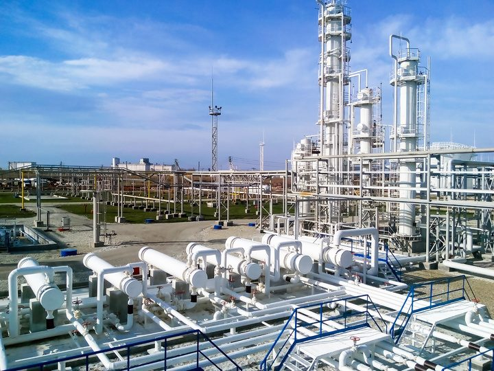
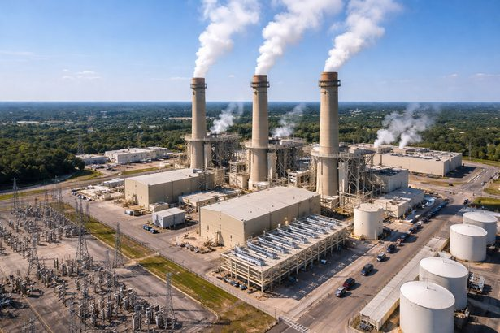
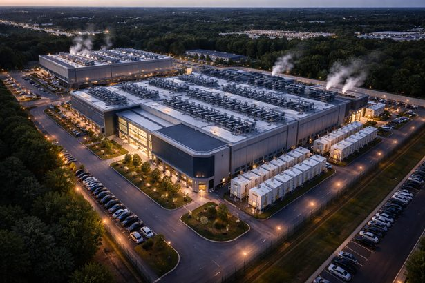
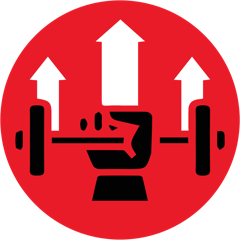

Mechanical
- Piping Systems Installation
- Equipment Setting and Alignment
- ASME “U” and “S” Code Work
- NBIC “R” Stamp Repair
- Structural Steel Erection
Mobilizing crews…
Turnkey Industrial Contractor · Since 2003
One contractor. Turnkey execution. Fewer handoffs.
Why choose PMI
PMI delivers coordinated, accountable, multi-discipline execution that reduces gaps between scopes and keeps work moving safely and efficiently.
One team. Every scope.
Civil, mechanical, soft craft, pipeline and facility services under one team, cutting handoff delays and improving coordination.
Direct communication and responsive leadership mean faster decisions and quicker issue resolution when conditions change.
The self-perform advantage
By self-performing critical scopes with our own workforce, PMI reduces subcontractor dependency, takes back control of your schedule, and keeps more of your budget on the work itself.
From our fab shops to your pipe rack
Shop support in Corpus Christi, Port Lavaca, Freeport, Houston and Baton Rouge, with PMI crews and rigging in the field. No handoff between the shop and the steel.
01 / 06 · Self-performed
02 / 06 · Self-performed
03 / 06 · Self-performed
04 / 06 · Self-performed
05 / 06 · Self-performed
06 / 06 · Self-performed
One contractor. One call.
Our capabilities
PMI supports maintenance, turnarounds, capital projects, and specialty work through a coordinated self-perform approach. Executing multiple disciplines under one team reduces contractor interfaces, improves schedule control, and delivers consistent project execution.
PMI advantage
Coordinated execution across multiple disciplines reduces contractor interfaces, improves communication, and keeps work moving from planning through completion.
Work is planned around site conditions and production requirements to help minimize disruption and support ongoing operations.
By self-performing critical scopes with our own workforce, PMI reduces subcontractor dependency and maintains greater control over project timelines.
Experienced field leadership provides consistent oversight, proactive communication, and ownership throughout maintenance, turnaround, and capital projects.
Industries served



About PMI
Palacios Marine & Industrial (PMI) is a privately owned turnkey industrial contractor and Certified Minority Business Enterprise (MBE) delivering construction, maintenance, turnaround, and specialty services that help industrial facilities operate safely, efficiently, and reliably.
Founded in 2003 and headquartered in Port Lavaca, Texas, PMI executes work through a coordinated self-perform approach designed to improve accountability, schedule performance, and project outcomes.
A people-first culture drives stronger field leadership, proactive problem-solving and reliable project support.

Dependable results that help clients maintain productivity and project momentum.
Transparent communication, accountability, and follow-through.
PMI strives to be our customers’ greatest asset by providing exceptional service through unrivaled responsiveness, reliability, and accountability.
Locations
Port Lavaca, Texas
Corpus Christi · Victoria · Freeport · Deer Park · Houston
Lake Charles · Baton Rouge
Mobile
Clarendon, Jamaica
Corpus Christi · Port Lavaca · Freeport · Houston · Baton Rouge
Let’s discuss
Planning an upcoming maintenance event, turnaround, capital project, or specialty service scope? Connect with PMI to discuss your project goals and execution requirements.
Corporate Office2392 State Highway 35 N, Port Lavaca, TX 77979